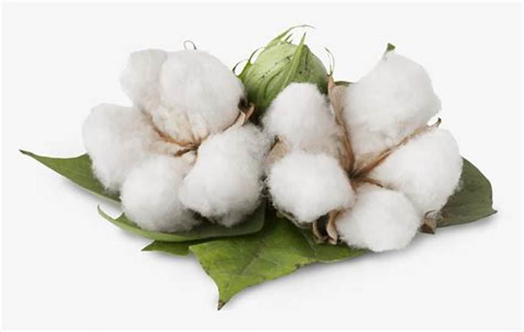

1. Seasons for Growing Cotton

Cotton is a tropical and subtropical crop that requires a warm climate to thrive. The seasons for cotton cultivation vary based on the region:
- Spring: In many cotton-growing regions, cotton is planted in the spring (March-April) to take advantage of the warm growing season.
- Monsoon: In tropical climates, cotton can also be planted during the monsoon (June-July) for a fall harvest.
- Autumn: Cotton can be grown in some regions during the autumn season (August-September), depending on weather conditions and water availability.